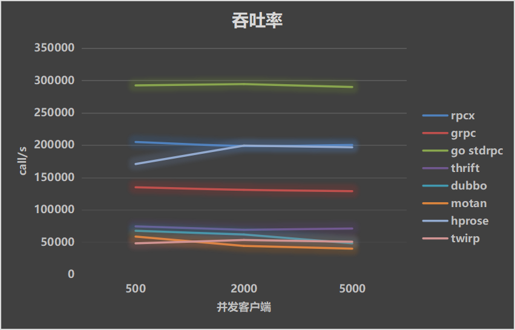
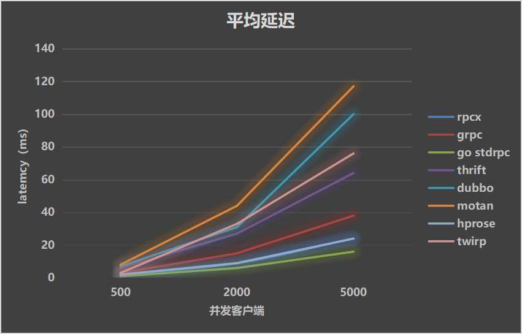
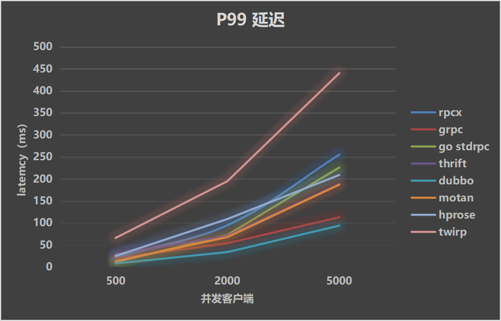
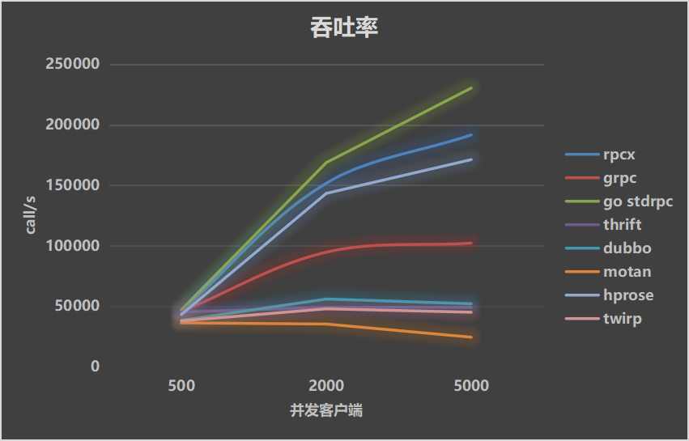
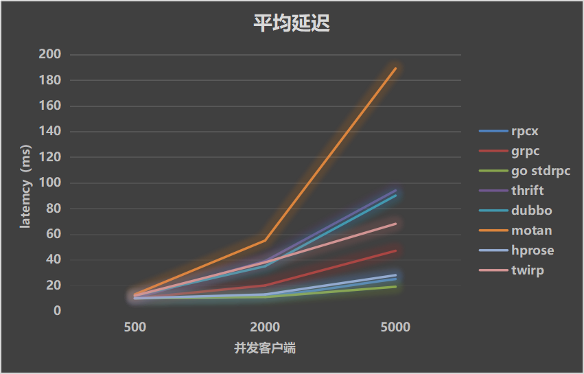
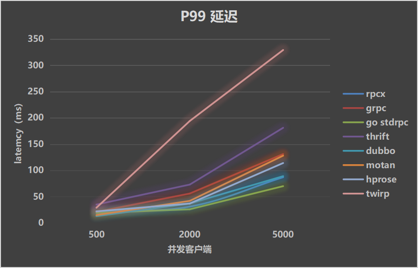
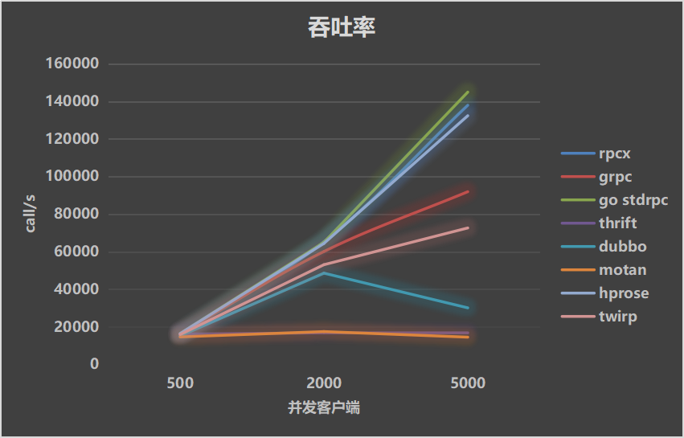

目录 [−]
随着公司规模的扩大，以及业务量的激增，单体应用逐步演化为服务/微服务的架构模式， 服务之间的调用大多采用rpc的方式调用，或者消息队列的方式进行解耦。几乎每个大厂都会创建自己的rpc框架，或者基于知名的rpc框架进行改造。
目前, rpc框架主要沿着两条路线发展，一个是目标为了跨语言，服务端可以用不同的语言实现，客户端也可以用不同的语言实现，不同的语言实现的客户端和服务器端可以互相调用。很显然，要支持不同的语言，需要基于那种语言实现相同协议的框架，并且协议设计应该也是跨语言的，其中比较典型的是 grpc,基于同一个IDL，可以生成不同语言的代码，并且语言的支持也非常的多。
另一个rpc框架发展的目标是支持服务治理，主要的精力放在服务发现、路由、容错处理等方面，主要围绕一个语言开发，可能也有一些第三方曲折的实现服务的调用和服务的实现，这其中的代表，也是比较早的开源的框架就是阿里巴巴的dubbo。
有些rpc框架协议的涉及一开始就没有考虑的跨语言，其中使用了语言的一些特有的属性，比如Java的ObjectInputStream/ObjectOutputStream, Golang的Gob等，有些在协议的设计上就考虑了通用性， 使用JSON或者Protobuffer作为数据序列化。
有些框架是基于TCP的二进制流的数据传输，有些基于http的request/response模型进行请求，也有基于http2的流式传输，更有一些支持可信赖的UDP进行数据传入，比如quic、kcp等。
有些提供了生态圈的一些框架，比如gateway、agent等，有些restful风格的rpc框架天然支持API gateway进行负载均衡。
有些已经得到了大厂的广泛应用，有的大厂内部得到了大量应用，但目前还没有广泛的推开来。
选择一个rpc框架会基于多方面的考虑： 框架特性、性能、成熟度、技术支持、社区活跃度等多个方面，本文只比较各个流行框架的benchmark，基于几个固定的场景提供benchmark数据支持。
本文所使用的benchmark代码位于: rpcx-benchmark, 这是我在开发rpcx框架的时候为了检验框架性能而抽取出来的一个项目，也欢迎各框架的作者和爱好者提供相应的框架benchmark代码，或者修正其中的错误。
本文测试的RPC框架
- rpcx: 基于Go的服务治理的rpc框架、客户端支持跨语言
- grpc: Google 出品的跨语言rpc框架，很弱的(实验性的)负载均衡, 测试使用的是grpc-go
- go std rpc: Go标准库的rpc, 不支持跨语言(jsonrpc支持json rpc 1.0)
- thrift: 跨语言的rpc框架，facebook贡献
- dubbo: 国内较早开源的服务治理的Java rpc框架，虽然在阿里巴巴内部竞争中落败于HSF，沉寂了几年，但是在国内得到了广泛的应用，目前dubbo项目又获得了支持，并且dubbo 3.0也开始开发
- motan: 微博内部使用的rpc框架，底层支持java,生态圈往service mesh发展以支持多语言
- hprose: 国内开发人员开发的一个跨语言的rpc框架，非服务治理但是性能高效
- twirp: twitch.tv刚刚开源的一个restful风格的rpc框架
- go-micro: Go语言的一个服务治理rpc框架， 在测试中发现性能不太好，所以没有继续测试，相关的测试代码已在github库中
- go kit: 欢迎提供测试代码
- 腾讯 Tars:腾讯公司的rpc框架， 欢迎提供c++ benchmark代码
- 百度 brpc: 百度公司的rpc框架， 欢迎提供c++ benchmark代码
- spring cloud: 本次没有测试
测试场景
模拟业务处理时间
测试模拟了三种业务处理的场景(模拟业务处理时间):
- 0ms: 业务很简单，可以快速返回。业务处理主要是将反序列化的对象设置几个字段后返回
- 10ms: 模拟一般的业务处理，这些业务处理主要是本地操作，比如读取本地的数据库等，处理时间相对较短
- 30ms: 模拟复杂的业务处理， 这些服务可能需要访问第三方服务，或者远程的数据等，处理时间相对较长
当处理时间为0ms时，我们主要测试的整个框架空转的处理能力，涉及的数据的传输，数据的序列化、服务的调度等等。
当处理时间为10ms、30ms时，这个时间业务处理时间一般要远远大于数据传输和序列化所需的时间，主要比较在大并发的性能框架的调度、处理能力。
测试数据
所有的测试都是基于相同的数据, 为了公平起见，统一采用protobuffer进行序列化和反序列化。
数据格式:
|
|
测试的时候会初始化这个数据，序列化后的数据大小为 581 字节。
测试client
测试 client类似apache bench工具， 主要通过-c和-n来控制并发数和测试请求量。
-c 指定并发的client,每个client都是独立的，在各自的goroutine或者Thread中运行。 Client采用同步的方式调用服务,也就是前一个服务调用完成后才发出下一个服务调用，因此并发量主要靠client的数量来确定。(当然有些rpc框架，比如rpcx/go std rpc支持异步调用，性能会更高，但是统一起见我们对所有的client都采用了同步调用的方式)
-n 只发送服务的总的请求数，由client平分。
client在所有调用完成后统一计算吞吐率和延迟。
测试指标
- 吞吐率: 每秒完成的请求量
- 平均延迟: 服务发出到收到response所需的时间
- P99延迟：99%的调用的延迟时间
测试环境
server和client在同一台服务器上，使用loopback网络。
cpu cores为 32, Intel Xeon E5-2630 V3 @2.4GHz
测试结果
处理时间 0ms
| 吞吐率 | 平均延迟 | P99 延迟 |
|---|---|---|
|  |  |  |
平均延迟 rpcx和hprose重合。
解读: 简单而高效的Go标准库的rpc性能优异，因为没有额外的服务治理和插件、过滤器的设置，它本身采用一个简单的header + payload的协议，运行高效。
rpcx表现不错，排名第二，并发量变化时吞吐率基本保持不变。
hprose在并发量低的情况下排名第三，但是在并发量大的情况下和rpcx持平。
其次是Google的grpc，吞吐率基本为Go标准rpc的一半。grpc经过去年下半年的性能优化，已经提升了不少的性能。
再其次是thrift,吞吐率在7万左右。
最后几个基本是dubbo、motan和twirp。
基本上，基于Go的rpc框架吞吐率还是很强大的, 除了twirp。
这里有一个奇怪的现象，在0ms这种case下， Go实现的框架P99延迟很大，但是在10ms/30ms下去很小。我在测试web框架的时候一位外国程序员也指出了一个问题，在业务逻辑中加上了runtime.Gosched()解决了这个问题。我想rpc测试也是这个问题，因为服务实现中没有机会让调度器抢走这个goroutine的执行，导致goroutine排队，并不能均匀地执行goroutine，我会在将来的时候验证这个猜想。
处理时间 10ms
当处理时间为10ms时， 本测试的理论上的吞吐率 = clients (1000ms/10ms) = clients \ 100. 实际由于服务的调度等原因，肯定是达不到这个吞吐率。
| 吞吐率 | 平均延迟 | P99 延迟 |
|---|---|---|
|  |  |  |
当业务处理时间为10毫秒的时候，服务器需要花一部分时间在线程/goroutine调度上，对于Go来说，它基于goroutine实现并发，对于Java，它基于线程池。
排名前4位的框架基本未变，go stdrpc、rpcx、hprose从趋势上看，随着并发数的增大，还有提升的空间，但是对于grpc,它基本处于一个平缓的趋势了。
其它几种Java框架已经呈现下降的趋势。
当然，在并发数很小的时候，吞吐率差别还不是很明显，基本请求都在10+ms的时候返回，都接近理论数字。
吞吐率高的rpc框架的延迟反而很低， 这也正说明了吞吐率高的原因。在并发数很大的时候，延迟已经远远大于业务处理时间了。
处理时间 30ms
当处理时间为30ms时， 本测试的理论上的吞吐率 = clients (1000ms/30ms) = clients \ 33. 实际由于服务的调度等原因，肯定是达不到这个吞吐率。
| 吞吐率 | 平均延迟 | P99 延迟 |
|---|---|---|
|  |
业务处理时间为30ms的时候，排名前4位的还是go stdrpc、rpcx、hprose和grpc。
排名第五的是twirp，它也是用Go开发的。第6位是dubbo，在2000并发的情况下性能还好。
在这个月全食的凌晨终于完成了测试，也欢迎大家提供bench代码和讨论。
Updated: 正好看到另外一位同学做的java的rpc/restful框架的benchmark, 可以和本文的对照。